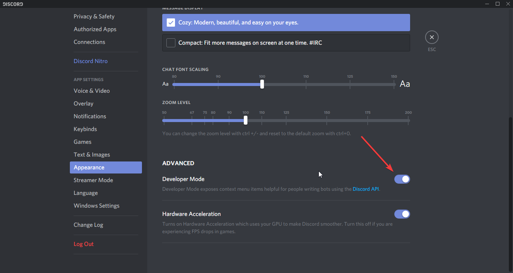

Basic Concepts / Getting Started
In this following section, you will find commonly asked questions and answers about how to get started with Discord.Net, as well as basic introduction to the Discord API ecosystem.
How do I add my bot to my server/guild?
You can do so by using the permission calculator provided
by FiniteReality.
This tool allows you to set permissions that the bot will be assigned
with, and invite the bot into your guild. With this method, bots will
also be assigned a unique role that a regular user cannot use; this
is what we call a Managed role. Because you cannot assign this
role to any other users, it is much safer than creating a single
role which, intentionally or not, can be applied to other users
to escalate their privilege.
What is a token?
A token is a credential used to log into an account. This information should be kept private and for your eyes only. Anyone with your token can log into your account. This risk applies to both user and bot accounts. That also means that you should never hardcode your token or add it into source control, as your identity may be stolen by scrape bots on the internet that scours through constantly to obtain a token.
What is a client/user/object ID?
Each user and object on Discord has its own snowflake ID generated based on various conditions.

Anyone can see the ID; it is public. It is merely used to identify an object in the Discord ecosystem. Many things in the Discord ecosystem require an ID to retrieve or identify the said object.
There are 2 common ways to obtain the said ID.
By enabling the developer mode you can right click on most objects to obtain their snowflake IDs (please note that this may not apply to all objects, such as role IDs, or DM channel IDs).

How do I get the role ID?
Warning
Right-clicking on the role and copying the ID will not work. This will only copy the message ID.
Several common ways to do this:
- Make the role mentionable and mention the role, and escape it
using the
\character in front. - Inspect the roles collection within the guild via your debugger.
This page was last modified at 10/3/2019 8:36:33 PM +00:00 (UTC).